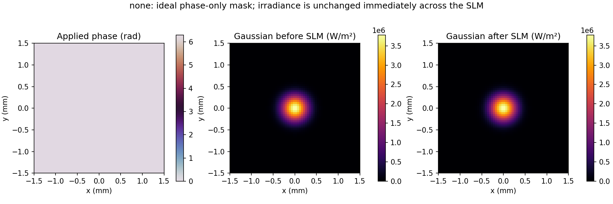
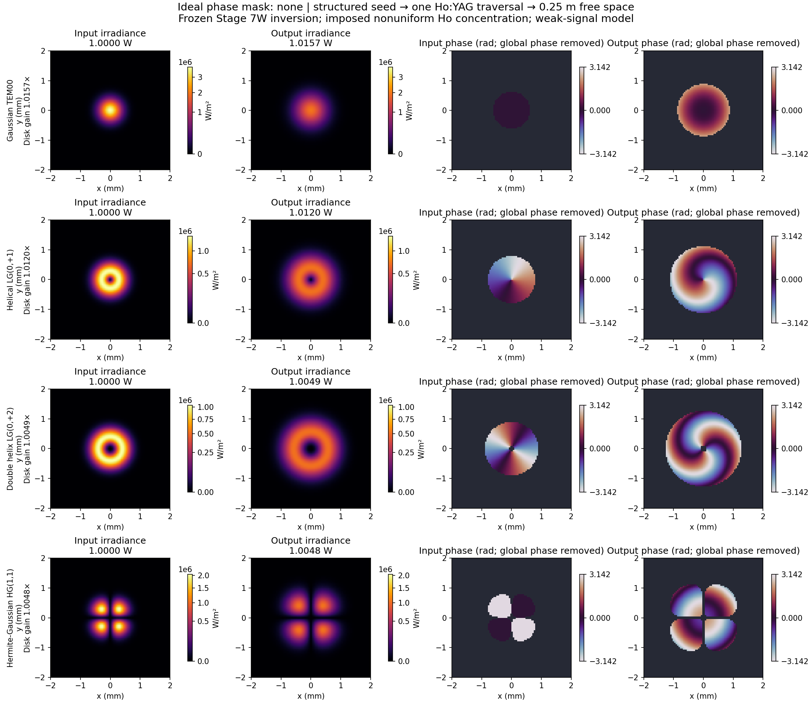
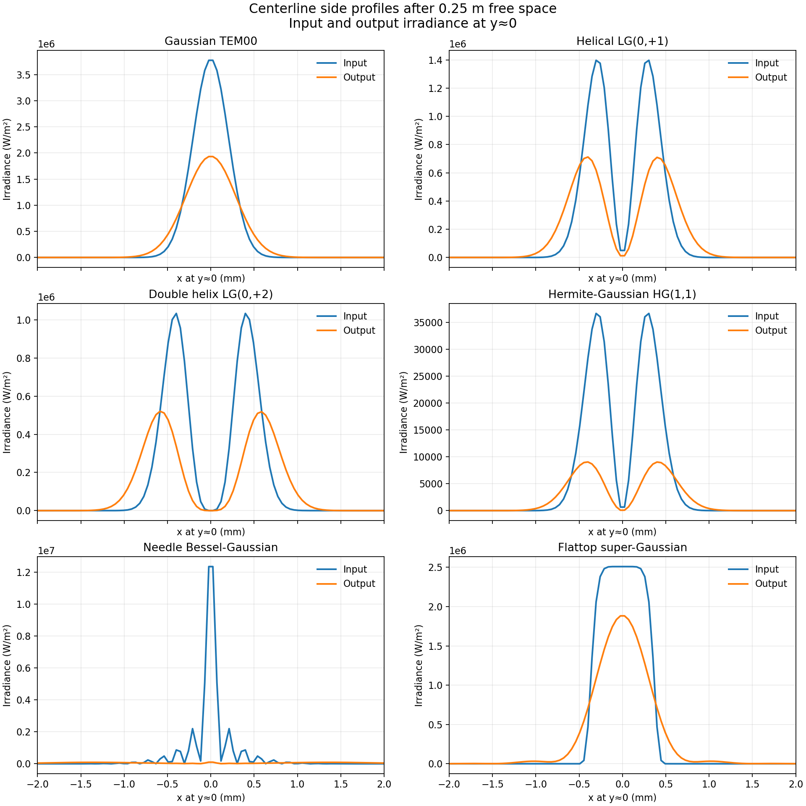
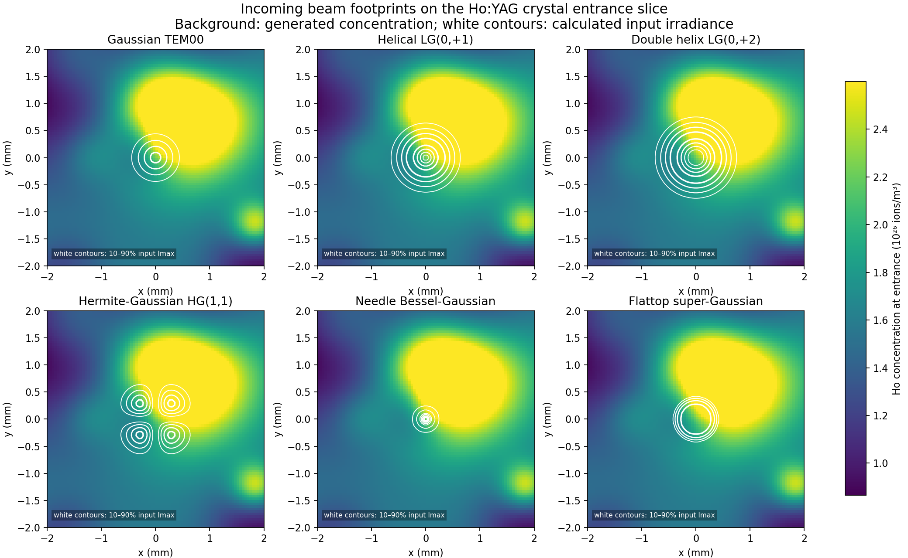
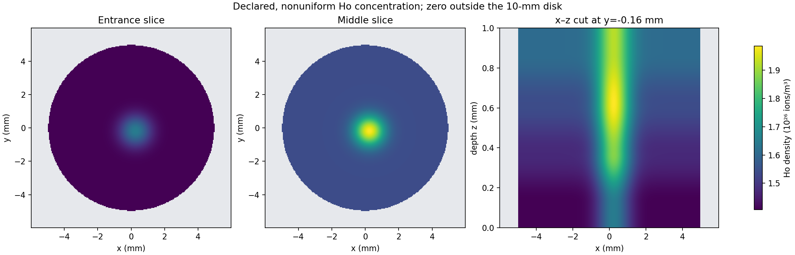

Saved example Select parameters and calculate to replace these plots.





Calculated probe powers
| Mode | Output power | Disk gain |
|---|
Model scope: one disk traversal plus free-space propagation, frozen archived inversion fractions, and weak-signal gain.